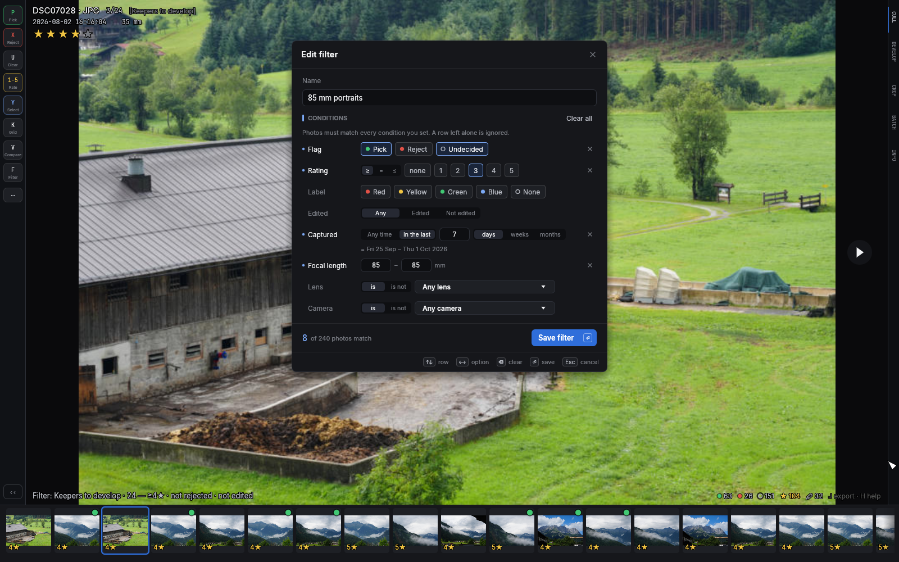
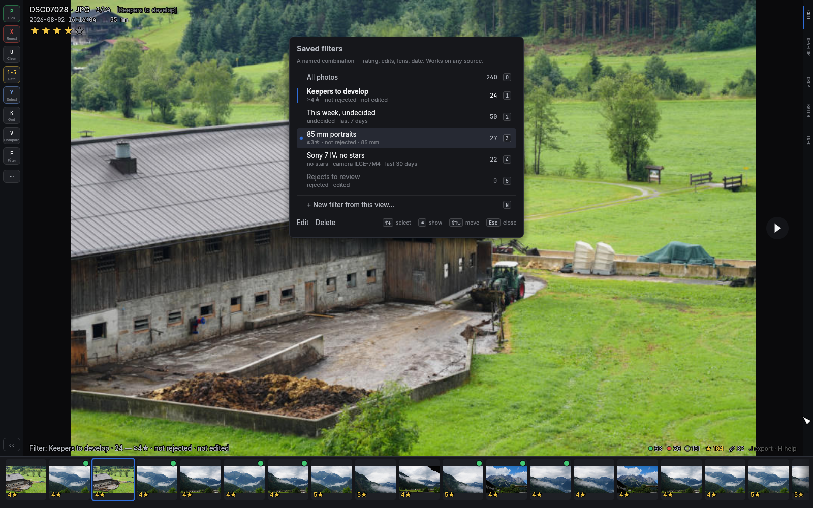

Culling
Culling is a keyboard rhythm: look, judge, move on. Every judgment is written to the photo's XMP sidecar immediately — there is no save step.
Moving around
| Key | Action |
|---|---|
← → | previous / next photo |
↑ ↓ | jump 10 back / forward |
Home / End | first / last photo |
Decoding runs ahead of you in both directions, so holding an arrow key never waits on the disk.
Judging
| Key | Action |
|---|---|
1–5 | star rating (press the same number again to clear) |
0 | clear the rating |
P | pick (press again to un-pick) |
X | reject (press again to un-reject) |
U | clear the flag |
6–9 | color label: red, yellow, green, blue (again clears) |
Stars, flags and labels are three independent axes — a photo can be a
4-star, picked, red-labeled photo. Labels show as a colored bar on the
filmstrip thumbnail and persist as the standard xmp:Label field, so they
survive a round trip through other tools.
Auto-advance (T toggles it) moves to the next photo after every
rating or flag, which is what makes a first pass fast: P, X, 3,
X, P… and you're ten photos in. Turn it off when you want to stack
multiple judgments on one photo; the overlay shows [manual advance].
culler remembers your choice across launches — it's the same switch as
the Auto-advance checkbox in Settings.
Culling with the mouse
The keyboard is the fast path, but everything above is clickable the moment the mouse moves — and every control shows its key, so the buttons teach the shortcuts as you go:
- The rail (left edge) carries the culling verbs as keycap buttons — Pick, Reject, Clear, Rate, Select, Grid, Compare, Filter — each showing its key with the name under it; hovering flares the full teaching line — and the Filter and Rate buttons open real palettes: click a filter to jump straight to it (each one shows how many photos it holds, your own saved filters included), click a star chip (1–5, 0) to rate. Its ⋯ button opens the menu with the rest: the live filter and its count, Survey, Match series, Batch, Sources, Settings, Auto-advance and Help (screenshot). Buttons you've used about five times (key or click) politely dim — the rail retires itself as you learn. The ‹‹ at its foot collapses it to a thin line; click the line (or rest the pointer on it) to bring it back.
- The spine tabs (right edge) name the workflow — CULL · DEVELOP · CROP. Click one to switch; rest the pointer on an inactive tab and a small palette appears to fire that mode's one-shot actions (auto tone, reset…) without switching at all.
- The stars in the top-left overlay become five click targets while the pointer is moving — hover previews, clicking sets the rating, and clicking the same star again clears it, exactly like the number keys.
- Hover a side edge of the photo for previous/next arrows (at fit zoom; when zoomed in, the mouse pans instead).

The photo itself stays untouched: the rail is a slim gutter, never an overlay, and collapsing it gets you within three pixels of a bare photo. The first launch shows a one-line hint beside the rail, once, and never again.
Selecting a set
Sometimes the thing you want to act on isn't "all my picks" but these twelve, exactly. Build a selection in the filmstrip or the Grid with the standard gestures:
Cmd/Ctrl+click a thumbnail to select or deselect it;Shift+click selects the whole run from the photo you're on to the one you clicked. From the keyboard,Ytoggles the current photo andShift+arrows sweep a run as you step;Cmd/Ctrl+Aselects everything in the current view andCmd/Ctrl+Dclears the selection. Sweeps follow your last toggle's direction: deselect a photo first (YorCmd+click) and the very nextShift+click orShift+arrows deselects the run — pruning a big selection is one gesture, not one click per photo.Shift+Yfilters the view to just the selected photos — cull a hand-picked shortlist with every tool (the grid included), thenShift+Y(orF) returns to the full view. The view tracks the selection live: deselecting a photo drops it from the filtered view on the spot, and clearing the selection falls back to the All filter with a status note.- Every selected photo wears a small blue check chip in its
thumbnail corner, the corner readout counts the set (
12 selected— the Grid header counts it too), and a plain click never touches it: clicking around to compare photos won't cost you the set.
The selection multiplies the marking verbs: when the photo you're
on is part of the selection, P / X / U, the star ratings and the
color labels mark the whole set at once (the status line confirms,
e.g. Rejected 12 selected). If every selected photo already carries
the value, the same key clears it from all of them — the familiar
toggle, set-wide. And in the batch panel (A), the Scope menu gains
Selected (N) so copy, move, export, upload — any batch action —
can run on exactly the set you built (see
Batch operations).
The selection follows the photos, not the view: changing the filter
keeps it (the batch panel notes how many are filtered out of sight),
and it survives non-destructive batch actions. It clears when you load
a different library — the status line says so — or on Cmd/Ctrl+D.
Filters: working in passes
F cycles the view: All → Picks → Picks+unrated → Rejects → Unrated → Edited →
Labeled and back. Shift+F returns straight to All. The overlay shows
the active filter, and the position counter (3/12) counts within it.
Unrated means no flag and no stars; a photo you've starred but not
yet picked or rejected isn't in it.
For a second pass over your ratings, Cmd/Ctrl+1–5 shows only photos
with at least that many stars, and Cmd/Ctrl+0 (or F) clears it.
Every filter tells you its size. Landing on one names it and counts it
on the status line (Filter: Picks · 312). The rail's Filter
palette lists every filter with its count before you choose. Filters
with nothing in them are greyed out but still clickable. Selected
and Unsaved show up in the list while they hold photos, and once
anything is rated, a row of ≥1★ … ≥5★ chips shows how many photos
each star filter would keep. F still steps through empty filters, so
the order you've learned never changes. Landing on an empty filter
says which one it is and how to move on ("No rejects yet — F for the
next filter · Shift+F shows all"). On a large Immich library that's
only partly loaded, the counts cover the loaded photos and carry a +
(312+); the palette notes how many are loaded. Inside a stack
(G), filters are off, and the palette says so.
On a server source, Shift+U shows only the photos whose develop or
crop edits haven't been saved with J yet (landmark points on their own
don't count — see Sources) — the same
photos the corner's "N unsaved" chip counts (clicking the chip is the same
gesture). A photo drops out of that view the moment it's saved, and
Shift+U again (or F) returns to All. Folder photos save as you edit
them, so there the key just says so.
A photo that stops matching the filter leaves the view as you judge it — rejecting a photo in the Picks view removes it and advances, which is exactly the winnowing motion you want.
Saved filters — Cmd+F
Each filter key asks one question. A saved filter asks several at
once and keeps them under a name: four stars or better, not rejected,
not developed yet; shot at 85 mm in the last week; everything still
undecided from the last fortnight. You set one up once, and from then
on Cmd/Ctrl+F and a digit brings it back — on any folder or server.
Making one. Get the view roughly right with the keys you already
know (F, Cmd+4, a pivot
on a lens or a camera), press Cmd/Ctrl+F, then N. The editor opens
already filled in from what you were looking at and says what it started
from. Type a name, add what the keys couldn't say, and press Enter:
the filter is saved and shown, and the status line reminds you how to
get it back.
The editor has eight rows. A row you leave alone is ignored, and a photo has to pass every row you set.
| Row | What it asks |
|---|---|
| Flag | any of Pick, Reject, Undecided. "Not rejected" is Pick and Undecided together. |
| Rating | at least (≥), exactly (=) or at most (≤) a number of stars; none is no stars. |
| Label | any of the colour labels, or None. |
| Edited | edited (developed or cropped), or not edited. |
| Captured | in the last N days, weeks or months, counted back from today. The editor prints the dates that works out to. |
| Focal length | from – to, in whole millimetres. Leave one end empty for "and up" or "and down"; the same number twice means exactly that focal length. |
| Lens | is, or is not, one lens. |
| Camera | is, or is not, one camera. |
A photo with no capture date never passes a Captured row, and one with no focal length never passes a Focal length row. A photo with no lens recorded does pass "lens is not …".

The foot of the editor counts the photos that match as you go. From the
keyboard: Tab moves between the name and the rows, ↑/↓ change the
row, ←/→ move along it, and Space works the control under the
ring — it lights a chip, picks an option, starts a number (a digit
starts one too), or steps the lens or camera list. ⌫ clears the row,
Enter saves and Esc cancels. While you type a number, Enter and
Esc belong to the number.
Using one. Cmd/Ctrl+F opens the list, each filter with its count
and a line saying what it means. 1–9 shows the filter at that
position; ↑/↓ and Enter, or a click, do the same. While a filter
is on, the list starts with All photos (0). The filter's name sits
in the overlay where [Picks] would — click it to open the list — and
the status line names it once, with its size and its meaning
(Filter: Keepers to develop · 41 — ≥4★ · not rejected · not edited).

It behaves like every other filter. A photo that stops matching leaves
the view as you judge it, so a "not edited" filter empties itself as you
develop — the photo leaves when you step off it or close the develop
pane, never from under the sliders. F, Shift+F and Cmd/Ctrl+0
return to All; Cmd/Ctrl+1–5, Shift+Y and Shift+U replace it;
Shift+G pivots on top of it and Esc brings you back to it. In the
grid, photos stay put while you mark, as they do for any filter.
Looking after the list. In the list, E edits the row under the
keyboard, ⌫ pressed twice deletes it, and Shift+↑/Shift+↓ move it —
the digits follow position, so the filter you use most can be 1. There
is room for nine. A name is at most 32 characters, can't repeat, and
can't be the name of a built-in filter. With the mouse, the rail's
Filter palette lists the first five with their counts under a
Saved filters… row that opens the full list; the ⋯ menu has the
same row.
A few things worth knowing:
- Dates count back from today. "The last 7 days" is today and the six days before it, on whichever source you open. On a folder older than that the filter shows nothing, and the empty view names the newest photo's date. Past midnight a date filter moves on a day and the status line says so.
- Large server libraries. A count covers the photos that are loaded
and carries a
+, as the other filters' counts do. A filter with a Captured row that falls inside the loaded months is exact and has no+: the newest photos load first, so "the last 7 days" is always complete. - Batches. With a saved filter on, the batch panel's Scope menu offers This view (N): exactly the photos you are looking at.
- A filter written by a newer version that this one can't fully read is listed greyed out ("needs a newer culler") and shows nothing, rather than quietly ignoring the part it can't read. It can be deleted.
- Saved filters aren't available in Compare, Match series, crop or the sources pane, and inside a stack every filter is off — the status line says so.
Pivot: same day, camera, lens or moment — Shift+G
Sometimes the photo in front of you raises a question about its
neighbours: what else did I shoot that day? everything from this lens?
the rest of this moment? Shift+G opens a small card that answers
it. It offers what this photo has, each with a count:
- Same moment (
M) — the moment the photo belongs to (moments); - Same day (
D) — every photo captured that day; - Same camera (
C) and Same lens (L) — every photo from that body or lens.
Pick a row with its letter, or ↑/↓ and Enter, or click it (Esc
closes the card). A row only appears when the photo has that detail — no
lens name, no Same lens row. The info panel
offers the same pivots from its Captured, Moment, Camera and
Lens rows: each carries a small count and an arrow, and a click
pivots.
The view becomes just those photos, with the cursor still on the photo
you pivoted from. A strip above the photo says where you are — Same day
· Tue 29 Sep 2026 · 214 photos · 12 picked · 30 rejected · 172
undecided — and in the grid the header says it instead. Everything
works as usual inside: judge, rate, select, N to survey, and F or
Cmd/Ctrl+1–5 to narrow further ("same day, picks only"). Marks never
move a photo out of the pivot itself — a day is still that day after you
reject a frame.
Two ways out:
Esc(or a click anywhere on the strip) goes back — to the exact photo you pivoted from, with the filter you were using, and back into the grid at the same scroll if that's where you came from. If that photo is gone (you moved it, say), the cursor lands where it was and the status line says so.Enterstays: it leaves the pivot but keeps the cursor on the photo you're looking at now. If that photo isn't in the filter you had before, the view widens to All and the status line tells you.
Pivoting again from inside a pivot swaps what you're looking at, but
Esc still takes you all the way back to where you started. What you
did inside stays done — marks, ratings, and the selection, which is one
set across every view (pivot, gather with Y, pivot again, then batch
the set). In the batch panel
the Scope menu gains This view (N) while you're pivoted.
Pivots don't start from Compare, Survey, Match series, crop or inside a
stack — the status line says why — and a stack can't be opened from
inside a pivot (Esc first). On a large Immich library that's only
partly loaded, a pivot covers the loaded photos (the strip says
"loaded"), and older months don't load in automatically while you're in
one. A rescan or a batch that removes photos ends the pivot and says so.
The one-pass workflow
- Open the folder,
Ton (the default), and run through everything withP/X/ arrows. Don't deliberate — that's what the next passes are for. Use Survey view on moments:Non a moment opens exactly that moment,Enterkeeps the photo you're on and rejects the rest, and.jumps to the next moment. Fto Picks. Rate the keepers1–5; use Compare view when two frames fight for the same slot.Cmd+4to see only the best, develop and crop them.Fto Rejects, then batch-move or trash them.
Everything you set here follows the photo: editors that understand XMP sidecars read the same fields on import, and on an Immich source the ratings sync to the server as you press the keys (details).